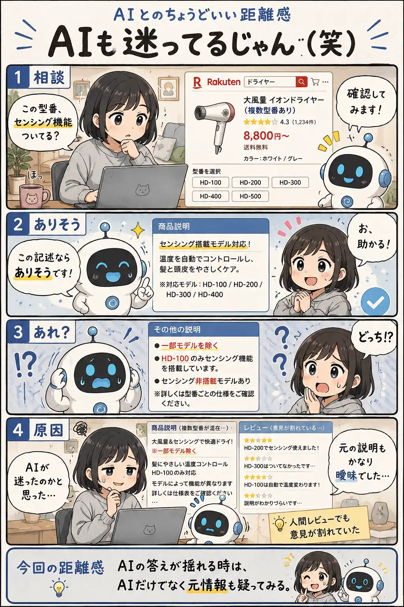

#038
AIも迷ってるじゃん（笑）
AIも、読んでいる情報に引っ張られる。

メモ
AIの回答が揺れると「AIが間違えた」と思いがちです。
でも実際には、元になっている情報が曖昧だったり矛盾していたりする場合もあります。
AIは与えられた情報から整理や推測を行います。判断がブレる時は、AIだけでなく情報源そのものに原因がないか確認してみると、状況が見えやすくなります。
今回の距離感
AIの答えが揺れる時は、AIだけでなく元情報も疑ってみる。
#038
AIも、読んでいる情報に引っ張られる。

AIの回答が揺れると「AIが間違えた」と思いがちです。
でも実際には、元になっている情報が曖昧だったり矛盾していたりする場合もあります。
AIは与えられた情報から整理や推測を行います。判断がブレる時は、AIだけでなく情報源そのものに原因がないか確認してみると、状況が見えやすくなります。
AIの答えが揺れる時は、AIだけでなく元情報も疑ってみる。